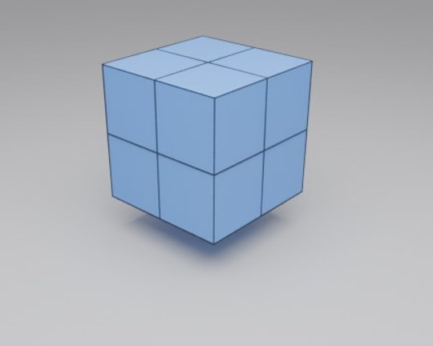
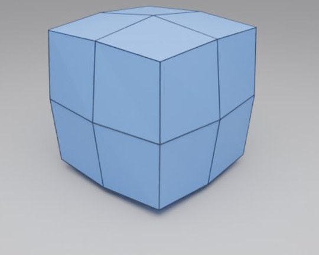

Bonus lesson
Shrink/Fatten
Shrink/Fatten moves the selected vertices inwards or outwards along their normals, all by the same distance. In Edit Mode, find it under Mesh › Transform › Shrink/Fatten, in the Toolbar, or press Alt+S.


How to control it
You control the distance by moving the mouse up or down, typing a number, or using the slider in the Adjust Last Operation panel. A positive value inflates the mesh. A negative value shrinks it.
Even Thickness
Even Thickness applies a larger offset to vertices that are part of a sharp corner, for a more uniform result. Toggle it by pressing S, by holding Alt, or with the checkbox in the Adjust Last Operation panel.
Read the manual page on Shrink/Fatten.
Try it
This exercise is our own suggestion and has not been run step by step in the GUI. Add a cube, enter Edit Mode and select everything. Press Alt+S and move the mouse up, then click. Use Ctrl+Z to undo.